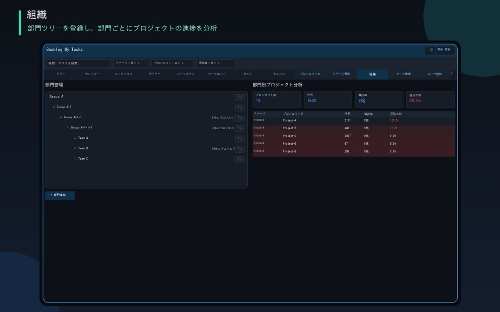

登錄部門樹狀結構並指派專案後，即可用於以部門為單位掌握進度，或作為跨空間篩選的依據。組織資料只會儲存在瀏覽器中，不會傳送到外部。

只要選擇父部門並輸入名稱，即可新增任意層級的部門。也支援調整顯示順序、摺疊、刪除
也內建以方框＋連接線將部門結構視覺化的組織圖模式
只要在資料管理分頁的下拉選單中指派部門，即可用於部門別專案分析與跨空間的部門篩選
選擇部門後，即可統整彙總該部門與子部門、孫部門的專案進度率、延遲工時等
由於不會與Backlog端或帳號之間同步，可以放心直接登錄公司內部的組織架構。也可透過匯出／匯入將資料帶到其他電腦